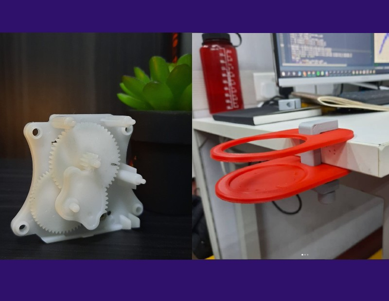

In my free time on weekends, I love to explore gadget stores like Funan Mall and Sim Lim Square in Singapore to find out about the latest tech, sometimes I spend hours admiring the craft of making a digital camera or time peices or sometimes just drawing inspirations for personal projects
When I am not wandering in shopping malls filled with electronics, I exploit my 3D printer to make utility tools, modification parts for my bike and more often something just to fix the kettle, door handle or keyboard. I buy old appliances like microwave, tv sets and music system and open them to explore the mechanical designs. I observe the mechanism, internal boss extrusions, material used and much more to learn how industrial designs are actually made. This greatly helps me in my personal projects as well as my job.
Few weekends are spent designing hobby projects like kirigami cards, automatic cloth hanger, robotic garment steamer etc. I take part in hardware hackathons once in a while and work on some tech project for startup as a consultant.
Assembling Ender 5
One of the biggest invention for me is the 3D printer. Since college days I have worked with all kinds of 3D printers starting from little and economical prusa printers to high-end metal stratasys and metaforge printers. This is one of my timelapse video of assembling ender 5 printer. I changed the heating bed to glossy finish and automated the bed leveling and callibration process.
I use 3D printed prototypes to get the right idea about the size (which doesn't happen intutively in CAD software). I use the prints also to get a feel of physical interaction and then modify the features like chamfers, fillets and undercuts to make the part more ergonomic.
.
A hack to make 3D objects from paper
Kirigami is the method to create pop-out art by cutting and folding paper. However, knowing where to the paper to create a 3D model is not very easy. Hence one gets restricted to the set of template available online. I hacked a way into this, that lets me create any physical model with Kirigami.
.
Gears and utilities
One of my hobbies is to do a tear down of toys, consumer electronics and appliances. I like to see and learn from these mechanisms, gear ratios and the arrangement in which those are stacked together. Sometimes these are part of linear drives or sometimes just a combination of crank and rocker.
For example, the image on right is a gear assembly from a room freshner. The motion and torque values were similar to a strong finger press, so I used the mechanism to generate a key press on my piano to plat a note every 1 hour.
The next image shows a cup holder in which the clamp has simple gear reduction to acheive a firm grip.
.
.
Design review
When I see things that have natural or engineered design beauty, I write a review about them on my instagram page. Link to the insta account is at the bottom of the page. For example why pilot ink pens have a capilary structure in the front? or why few food packets have 4 notches for cutting instead of 2
These wonderful design features remain hidden most of the time, but after pondernig for a bit one can easily point out the importance and application of that particular feature. I get inspired by such thoughtful designs and I hope that my designs can also match these standards one day